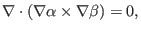
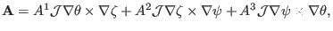

Next: Laplacian operator in general Up: Curvilinear coordinate system Previous: Gradient and directional derivative
To calculate the divergence of a vector, the vector should be in the contravariant representation since we can make use of the fact that
|  | (133) |
|  | (134) |
yj 2018-03-09